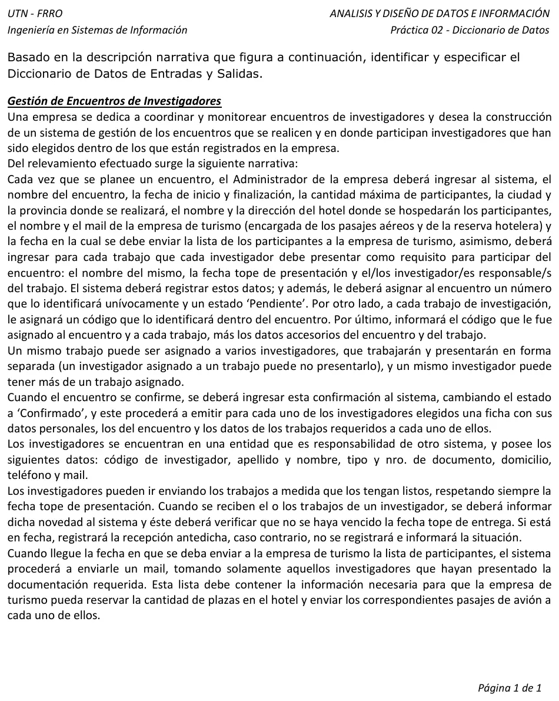

Práctica 02: gestión de encuentros de investigadores
Prácticas
Enunciado


Propuesta de respuesta
Respuesta no verificada. La propuso Luta Studios con inteligencia artificial y ningún docente la revisó. Puede tener errores.
Uso la notación de la clase 1. e: marca un flujo de entrada y s: uno de salida, (e) una estructura, y después del ; van el tipo y los valores de un elemento discreto. Sigo el orden de la narrativa, que tiene cuatro momentos.
1. Alta del encuentro. La ingresa el Administrador. El sistema registra, asigna el número y el estado, y responde.
e: nuevoEncuentro = nombreEncuentro + fechaInicio + fechaFinalización + cantMáximaParticipantes + ciudad + provincia + hotel(e) + empresaTurismo(e) + fechaEnvíoLista + 1{trabajoRequerido(e)}n
hotel(e) = nombreHotel + direcciónHotel
empresaTurismo(e) = nombreEmpresa + mailEmpresa
trabajoRequerido(e) = nombreTrabajo + fechaTopePresentación + 1{códigoInvestigador}n
s: encuentroRegistrado = datosEncuentro(e) + estadoEncuentro + 1{trabajoAsignado(e)}n
datosEncuentro(e) = nroEncuentro + nombreEncuentro + fechaInicio + fechaFinalización + ciudad + provincia + hotel(e)
trabajoAsignado(e) = códigoTrabajo + nombreTrabajo + fechaTopePresentación
estadoEncuentro = char(10); [Pendiente | Confirmado]- Los investigadores están en otro sistema, así que en la entrada va solo
códigoInvestigador. Un trabajo puede tener uno o varios responsables, y por eso1{códigoInvestigador}n. nroEncuentro,códigoTrabajoy el estado «Pendiente» los asigna el sistema. No entran, salen en la respuesta.
2. Confirmación. El estado pasa a «Confirmado» y sale una ficha para cada investigador elegido.
e: confirmaciónEncuentro = nroEncuentro
s: fichaInvestigador = investigador(e) + datosEncuentro(e) + 1{trabajoAsignado(e)}n
investigador(e) = códigoInvestigador + apellidoNombre + tipoDoc + nroDoc + domicilio + teléfono + mail
tipoDoc = char(3); [DNI | DU | PAS | LE | LC]datosEncuentro(e) y trabajoAsignado(e) se reusan del paso 1, así no hay redundancia. Los valores de tipoDoc son los del ejemplo de la clase 1, porque la narrativa no los da.
3. Recepción de trabajos.
e: recepciónTrabajos = nroEncuentro + códigoInvestigador + 1{códigoTrabajo}n
s: resultadoRecepción = 1{códigoTrabajo + mensajeRecepción}n
mensajeRecepción = ["Se registró la recepción del trabajo" | "Venció la fecha tope de presentación. No se registró la recepción"]Se pueden recibir uno o varios trabajos del mismo investigador, y cada uno se controla contra su propia fecha tope. Por eso el mensaje va por trabajo.
4. Lista para la empresa de turismo. No hay flujo de entrada, la dispara la fecha de envío que se cargó en el paso 1. Se manda por mail.
s: listaParticipantes = datosEncuentro(e) + cantidadPlazas + 1{participante(e)}n
participante(e) = apellidoNombre + tipoDoc + nroDoc + domicilio + teléfono + mail- Entran solo los investigadores que presentaron la documentación requerida.
cantidadPlazases calculado, la cantidad de participantes, y es lo que la empresa necesita para reservar el hotel. Los datos personales le sirven para los pasajes.
Respuesta no verificada. Puede tener errores.
Se armó con Final, secciones Flujos de entrada y salida, Notación, Del caso de uso al diccionario (el CUU01 de la cátedra) y Depurar el diccionario, por la redundancia.
Quedó en duda: Los textos de los mensajes son de esta propuesta, la narrativa solo dice que se informa la situación. La fecha de recepción la toma el sistema. Si la carga el Administrador, va en el flujo. La narrativa no dice si al confirmar se controla la cantidad máxima de participantes. Los valores de tipoDoc son los del ejemplo de la clase 1.